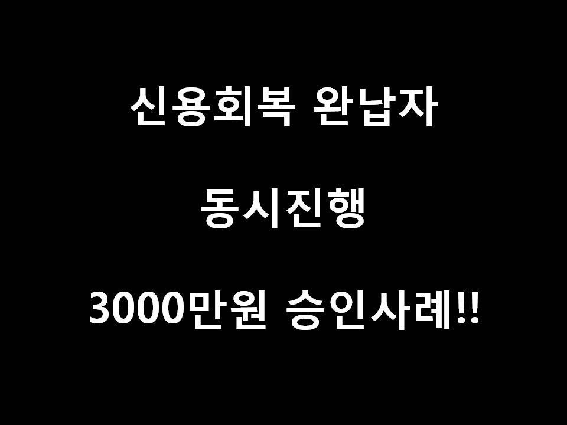
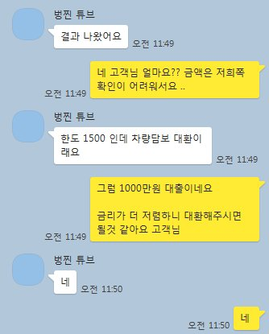
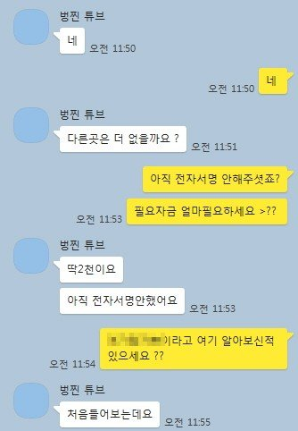
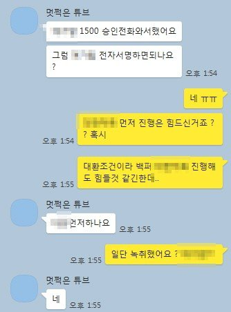
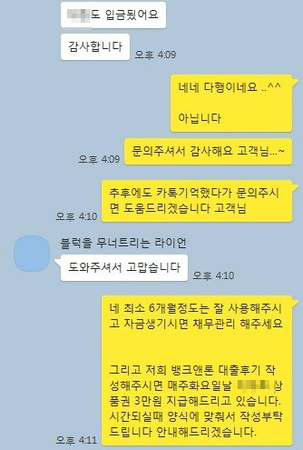

신용회복 완납자 동시대출 1500+1500 총3000만원 동시대출 사례 .!!

안녕하세요 뱅크앤론 김한수 상담사입니다.
금융정책의 수시로 변경되어서 대출에 대한 규제도 유동적인데요.. 저번주에는 회생자 동시진행으로 안내드렸는데 이번주는 신용회복 완납자 사례를 통해 안내해드리겠습니다.
고객님께서는 신용회복 2년동안 신용회복 완납을 하셨고 가지고 계신 채무로는 2월달에 차량담보 500만원 대출 있었습니다.
저희 뱅크앤론 문의전 고객님은 혼자서 몇군데 알아보셨는데 부결되셨습니다.
고객님이 처한 상황을 듣고선.. 회복완납자 상품으로 알아본 결과
A금융사에서 1500만원 21%(차량500만원 대환조건) 한도가 나왔습니다.
먼저 한도를 확인 한 후 고객님께서 필요자금이 2000만원이셔서.. 고객님이 안해본 금융사 찾아 알아본 결과
B금융사 1500만원 18% 한도가 나왔습니다.
동시대출의 위험성을 고객님께 충분히 안내하고 ..A금융사 B금융사 동시진행 그 결과는
두곳다 승인됐습니다. ^^ 고객님께서는 필요자금이 나와서 저희 뱅크앤론 통해 감사의 인사를 주셨습니다.
아래는 저와 고객님 카톡대화내용입니다.
자금이 필요할때 문의주시면 언제든 도움드리겠습니다. 감사합니다. ^^ 이번 한주도 행복하세요.. ^^



